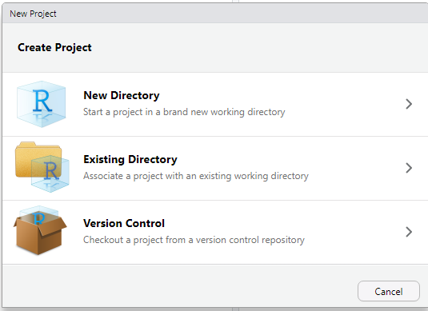
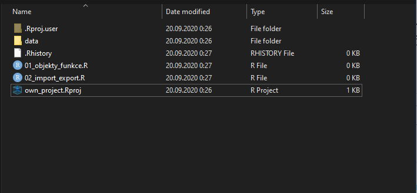

V této sekci se zaměříme na to, jak importovat a exportovat data v R a probereme základní praktiky organizace dat.
Většina analýz začíná importem dat do R. Funkce pro import začínájí slovem read, např. read.csv() nebo readRDS(). R samotné umí načíst základní typy souborů, z nichž nejdůležitější je comma separated value (.csv) a vlastní formát RDS (.rds).
CSV soubory je možné importovat pomocí funkce read.csv(). Tato funkce vyžaduje alespoň jeden argument, file, což je cesta k datasetu. Výsledek rovnou uložíme do nového dataframu:
countries = read.csv(file = "C:/Users/ales_/Desktop/own_projects/Uvod_do_analyzy_dat_v_R/data/countries.csv")Cestu k souboru můžeme ve Windows podržením klávesy shift a kliknutím pravým tlačítkem myši na soubor v našem počítači. Potom zvolíme možnost copy as path a zkopírovanou adresu vložíme do R klasicky pomocí ctrl + c.
V některých operačních systémech je třeba si dát pozor ještě na jednu věc. Zkopírovaná adresa souboru bude obsahovat backslash (\), R ale v adrese očekává forwardslash (/), případně dvojité backslash (\\). Pokud bychom zkusili ve funkci read.csv() použít adresu, tak jak je, dostaneme chybu:
countries = read.csv("C:\Users\ales_\Desktop\own_projects\Uvod_do_analyzy_dat_v_R\data\countries.csv")Naštěstí pro to existuje relativně jednoduchá oprava. Před cestu k souboru napíšem r a cestu samotnou (uvnitř úvozovek!) dáme do kulatých závorek:
countries = read.csv(r"(C:\Users\ales_\Desktop\own_projects\Uvod_do_analyzy_dat_v_R\data\countries.csv)")Prestože funkce read.csv() vyžaduje pouze argument file, často je nutné využít i některé další.
První problémem je, že i když se formát jmenuje comma separated values, hodnoty nemusí být nutně oddělené čárkou (,). Například česká verze Excelu odděluje hodnoty středníkem (;) a to i když mají být data vyexportována do .csv formátu. Je to dáno tím, že čárka se v českém prostředí tradičně používá pro oddělení desetiných čísel (na rozdíl od anglosaské tečky). Excel tedy využívá čárku pro oddělení desetiných míst a sloupce odděluje středníkem. Pokud se nám jednotlivé sloupce dat špatně načtou, je na vině pravděpodobně toto. Tento problém se dá naštěstí jednoduše vyřešit tím, že ručně nastavíme separátor sloupců (sep) na středníky a oddělovač desetiných míst (dec) na čárky. Funkce tedy bude ve formátu read.csv(file = ,sep = ";", dec = ","). Případně můžeme využít funkci read.csv2(), která dělá to samé, abychom si ušetřili psaní.
Druhým častým problém je encoding. Encoding je způsob, jakým počítače uchovávají a zobrazují znaky. Některé operační systémy a programy využívají takzavaný Unicode, standardizovaný systém zajišťující čitelnost znaků napříč všemi jazyky. Jiné operační systémy, mezi které patří i Windows, využívají local encoding, tedy uchovávání znaků specifické pro daný jazykový region. Česká verze Windows tedy čte jinak, než například anglická nebo ruská. To vede k problémům při náhrávání dat. Pokud jsou data uložené v lokálním českém encodingu, nemusí být nahraná správně. Například ze slova muž se stane mu?. Tento problém je většinou možné vyřešit tak, že ručně nastavíme, do jakého encodingu mají být data převedena, a to pomocí argumentu encoding. Největší šanci na úspěch má nastavení encodingu na UTF-8, což je jedna z verzí unicodu (univerzálního encodingu). Funkce bude vypadat jednoduše read.csv(file = , encoding = "UTF-8").
.rds je specializovaný R formát, obdobně jako je .sav specializovaný formát SPSS a .dta specializovaný formát Stata. Na rozdíl od prostého .csv souboru, může .rds uchovávat další informace o datech, jako například pořadí odpovědí likertových položek nebo textové označení (labely) proměnných. .rds také nemusí sloužit pouze k uchovávání syrových dat, ale i dalších objektu, například spočítaných modelů!
Import .rds dat je téměř identický s importem .csv souborů:
countries = readRDS(file = r"(C:\Users\ales_\Desktop\own_projects\Uvod_do_analyzy_dat_v_R\data\countries.rds)")Platí přitom stejná omezení, co se týče lomítek, tedy je třeba přidat r před cestu k souboru a závorky okolo cesty samotné (unvitř úvozovek). Není ovšem nutné řešit separátory sloupců a ani encoding.
Kromě výše zmíněných formátů je možné importovat i data z dalších populárních softwarů pro analýzu dat. Využít pro to můžeme balíček haven (který je součástí projektu tidyverse). Data z SPSS je možné importovat pomocí funkce read_spss(). Pro import dat ze softwaru Stata slouží funkce read_dta() a pro SAS funkce read_sas(). Pro data z Excelu je nutné nainstalovat samostatný balíček readxl (který je součástí tidyverse) a využít funkci read_excel().
U importu dat v SPSS formátu se ještě zastavíme. Přestože balíček haven dokáže importovat .sav soubory, má dvě omezení. Zaprvé je nutné ručně specifikovat encoding .sav souborů pocházejících z české verze SPSS (argument encoding = "Windows-1250") a zadruhé proměnné načítá v atypickém labelled formátu. V mnoha případech je pohodlnější použít balíček foreign
Balíček foregin nejen lépe zvládá český encoding, ale i automaticky převede labely na hodnoty. Data cvvm_cerven_2019.sav můžeme nahrát pomocí funkce:
cvvm = read.spss("cvvm_cerven_2019.sav", to.data.frame = TRUE, reencode = TRUE)Argument to.data.frame = TRUE importuje data jako dataframe (jinak bude výsledkem list) a argument reencode = TRUE převede encoding tak, aby byly všechny znaky zobrazeny správně.
Data nemusíme nutně importovat pouze z našeho počítače. Pokud jsou data ke stažení na internetu, je možné je stáhnout do R rovnou. Například data o zemích jsou uložena na Githubu na adrese https://github.com/alesvomacka/Uvod_do_analyzy_dat_v_R/raw/master/data/countries.csv. Pro jejich stažení stačí použít:
countries = read.csv("https://github.com/alesvomacka/Uvod_do_analyzy_dat_v_R/raw/master/data/countries.csv")Export dat probíhá velmi podobně jako jejich import. Funkce pro export zpravidla začínájí slovem write, případně save. Pro uložení dat v .csv formátu slouží funkce write.csv(), která potřebuje dva argumenty. x je jméno objektu, který chceme exportovat a file je cesta, kam má být objekt uložen:
write.csv(x = countries, file = r"(C:\Users\ales_\Desktop\own_projects\Uvod_do_analyzy_dat_v_R\data\countries_backup.csv)")Na konci cesty je název souboru, do kterého budou data exportovány (v našem případě countries.csv). Nesmíme také zapomenout na koncovku souboru (.csv), jinak se soubor exportuje bez ní a bude nutné jí později přidávat manuálně. Můžeme také ručně nastavit seperátor sloupc pomocí argumenty sep (ve výchozím nastavení ,) a oddělovač desetinných čísel (ve výchozím nastavení .). Encoding je možné nastavit pomocí argumentu fileEncoding (standardně UTF-8).
Uložení do .rds probíhá pomocí funkce saveRDS(). Stejně jako v předchozím případě je nutné specifikovat, jaký objekt má být exportován (argument object) a cesta, kam má být soubor uložen (argument file):
saveRDS(object = countries, file = r"(C:\Users\ales_\Desktop\own_projects\Uvod_do_analyzy_dat_v_R\data\countries_backup.rds)")Přestože je možné při importu a exportu dat explicitně určit cestu k souboru v rámci dané funkce, opakované vypisování cesty je nepohodlné. Místu toho můžeme určitý adresář určit jako pracovní adresář (working directory). Pracovní adresář je místo, odkud bude R automaticky importovat a kam bude exportovat soubory, pokud neřekneme jinak.
Adresu současného pracovního adresáře zjistíme pomocí funkce getwd(), zkratka pro get working directory :
getwd()## [1] "C:/Users/ales_/Desktop/own_projects/Uvod_do_analyzy_dat_v_R"Pokud bychom chtěli nastavit nový pracovní adresář, použijeme funkci setwd() (set working directory):
setwd(r"(C:\Users\ales_\Desktop\own_projects\Uvod_do_analyzy_dat_v_R\data)")Od této chvíle, pokud neřekneme jinak, bude všechny soubory hledat a ukládat do výše zmíněné složky. Například, pokud bychom chtěli importovat .csv soubor, který ve složce je v pracovním adresáři, stačí:
countries = read.csv("countries.csv")Na rozdíl od předchozích případů už nemmusíme vypisovat celou adresu do funkce read.csv(). Pokud se v pracovním adresáři nachází soubor countries.csv, R si ho najde samo. obdobně můžeme použít i funkce readRDS() nebo write.csv().
Toto nastavení pracovního adresáře platí pouze pro do konce sezení. Pokud bychom R vypnuli a zapnuli, vrátí se pracovní adresář na původní adresu. Pokud bychom chtěli adresu pracovního adresáře změnit permanentně, můžeme to udělat pomocí nastevení Rstudia. V záložce Tools zvolíme Global Options… . Hned v záložce General je možnost Default working directory (when not in a project), kde můžeme nastavit permanentní adresu našeho pracovního adresáře.
Jednou z velkých předností Rstudia jsou Rstudio projekty. Rstudio projekty představují efektivní způsob organizace práce. Každý projekt může mít své vlastní nastavení, včetně pracovního adresáře a svojí vlastní historii změn. Projekty mají zároveň několik výhod ve spojení s některými balíčky (viz. níže).
Nový Rstudio projekt vytvoříme tak, že v pravém horním rohu Rstudia klikneme na File a New project… . Na výběr budeme mít několik možností:

Pokud chceme pro náš projekt vytvořit novou složku, zvolíme možnost New directory. Pokud už máme složku, ze které chceme vytvořit Rstudio projekt, zvolíme možnost možnost Existing directory. Nakonec, možnost Version control slouží k propojení se systém pro sledování a archivaci změn, což je nad rámec toho kurzu.
Pokud vyvářime pro náš projekt novou složku, můžeme zvolit z několika předpřipravených nastavení. Pro teď stačí zvolit New project. Poté už jen stačí zvolit název složky, která bude složit jako projekt(Directory name) a adresu, kde se má projekt nacházet (Create project as subdirectory of).
Pokud už máme vytvořený adresář a pouze z něj vytváříme projekt, stačí pouze nastavit jeho adresu (Project working directory).
R studio projekt je v podstatě klasický adresář, ale obsahuje navíc soubor .Rproj. Otevřením toho souboru (klasicky dvojklikem) otevřeme projekt. Všechny změny v nastavení, jako třeba pracovní adresář, jsou izolovány pro daný projekt.
Už jsme si ukázali dva způsoby importování a exportování souborů: buď můžeme určit adresu souboru v rámci funkce pro import/export nebo můžeme na začátku nastavit adresu pracovního adresáře. Oba tyto způsoby ale mají jednu nevýhodu: Adresy souborů, případně složek, jsou definované staticky. Například funkce setwd("C:/Users/ales_/Desktop/own_projects/Uvod_do_analyzy_dat_v_R) bude fungovat pouze pokud požíváme operační systém Windows, uživatelský účet se jmenuje ales_, na ploše existuje složka own_project a v ní existuje složka Uvod_do_analyzy_dat_v_R. To znamená, že funkce nebude fungovat na žádném jiném počítačí nebo pokud by se někdy názvy složek změnily. Naštěstí existuje způsob, jak nastavit pracovní adresář dynamicky, tak aby se vždy přizpůsobil konkrétní situaci.
Řešením je balíček here. Tento balíček dynamicky upravuje cestu k pracovnímu adresáři tak, aby fungoval bez ohledu na to, na jakém počítači a v jaké složce se skript nachází. Velmi dobře přitom spolupracuje s Rstudio projekty.
nejdříve je nutné si balíček here stáhnout:
install.packages("here")Když máme balíček stažený, stačí ho vždy nahrát na začátku skriptu pomocí funkce library():
library(here)Když balíček poprvé nahrajeme, zobrazí se zpráva here() starts at... následováná adresou. To znamená, že balíček nastavil pracovní adresář tam, kde pracujeme.
Konkrétní adresu, kterou balíček here nastaví jako pracovní adresář, se řídí několika pravidly (převzato od Jennifer Bryan):
Pro nás je zajímavý zejména bod 2. here nastaví pracovní adresář tam, kde kde se nachází nejbližší soubor .Rproj (pokud dříve nenajde .here). Soubor .Rproj vzniká vytvořením Rstudio projektu. Jinak řečeno, pracovní adresář je vždy nastaven na současný Rstudio projekt. To znamená, že bez ohledu na to, kam složku s Rstudio projekt přesuneme, ať už na našem vlastním počítači nebo jiném jiném, pracovní adresář bude vždy nastaven správně.
Po tom, co jsme aktivovaly balíček here pomocí library(here), můžeme použí funkci here() uvnitř funkcí pro export a import dat:
countries = read.csv(here("countries.csv"))Tímto způsobem můžeme importovat data, aniž bychom museli vypisovat přesnou adresu nebo nastavovat pracovní adresář ručně. POkud by data nebyla přímo v pracovním adresáři, ale ve složce uvnitř pracovního adresáře, můžeme ji jednoduše specifikovat. Například, pokud by soubor countries.csv byl ve složce data, která se nachází v pracovní adresáři:
countries = read.csv(here("data", "countries.csv"))Pokud je náš skript uložený uvnitř Rstudio projektu, balíček here zaručuje, že skript bude fungovat vždy bez ohledu na to, kam ho přesuneme.
Přestože existuje mnoho způsobů, jak organizovat práci v R, následující přístup vede k pravděpodobně nejpřehlednějšímu a nejhladšímu průběhu práce.
Každý pracovní projekt by měl mít vlastní Rstudio projekt. Výhody Rstudio projektu jsou shrnuty výše a váží se zejména k individualizovanému nastavení. Jeden Rstudio projekt by také měl korespondovat s pouze jedním pracovním projektem (např. každý školní předmět, případně studie na které pracujete, by měla mít svůj vlastni projekt).
Rstudio projekt by neměla být jedna velká složka, ve které jsou smíchané všechny soubory od dat po skripty. Data by měla být uchovávana ve vlastní složce a stejně tak textové soubory (reporty, úkoly). Skripty mohou zůstat v hlavní složce.
Import a export dat může být překvapivě zdlouhavou záležitostí.Cesty k souborům měnit pokaždé, když složku s projektem přesuneme. Tento problém se ovšem dá vyřešit pomocí balíčku here, který cesty k souborům kontroluje za nás.
Tyto typy by měly výrazně ulehčit práci s R a umožnit hladký průběh analýzy. Pro představu, složka projektu, ve kterém pracujeme by měla vypadat nějak takto:
